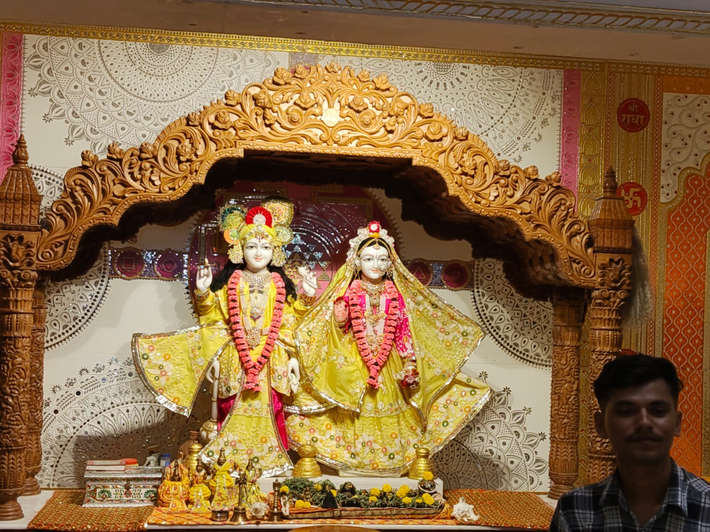

Peace / spirituality / silence
Not every feeling needs words
Story
This place will always be one of my favorite places in the world.
In this so-called modern world..full of the rat race
and in competition trying to move ahead of one another.
This is one of the few places where I truly find peace and calmness.
Reflection
We all have so many doubts and so many plans , that
how will this happen , how will that happen... and so many
so whenever you feel such things ....just leave all your
plans and worries at Their feet.They will do whatever
is truly best for you.💫
Radhey-Radhey😊